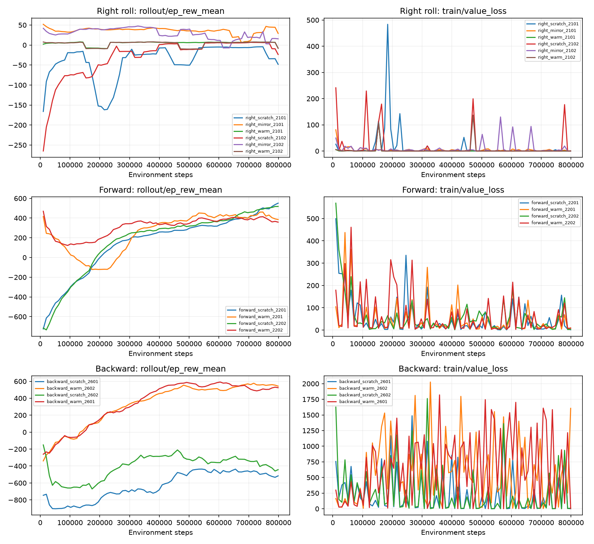
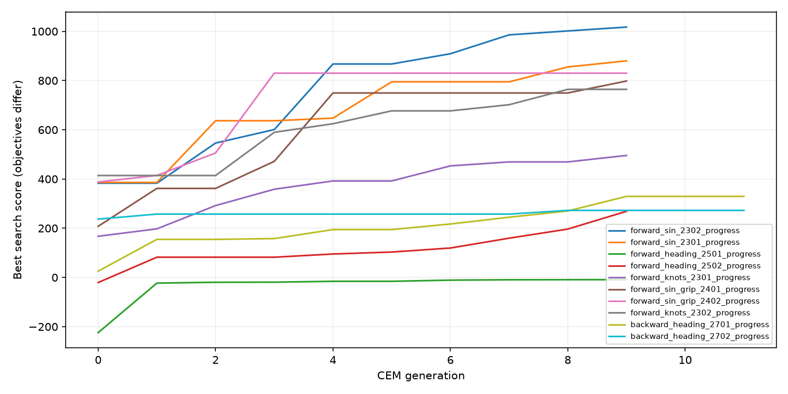

4.1.2：第一次右翻与大幅前进/后退/后退
作者：同济子豪兄 2026-10-26；实验2026-11-13。14组PPO，共11,210,752步；另10组CEM周期/方向修正搜索。没有烧录。
5V、橡胶圆帽、地毯近似；未实测标定。所有评估实际pitch_neg起步。右翻成功定义是首次净翻转≥86.4°持续0.2秒，最终仍净≥72°，无站起；不是连续翻多圈成功。前进/后退32秒沿指令方向净≥4cm且满足后半程持续推进、末端朝下/接触、航向和横向漂移限制。不能只根据动作幅度或一个好视频判断可靠性。
选择右翻：right_mirror_2101；前进：forward_heading_2502；后退：backward_heading_2701。右翻使用镜像初始化后PPO补训，前进使用最终验证选择的控制器；保留4.1其它动作及通信/回零修复。


final
| 模型 | N | 通过率 | 站起率 | 平均沿指令方向净进度 | 下/上目标摆幅 |
|---|
| forward_41 | 100 | 25.0% | 0.0% | 2.5 cm | 34.3° / 47.8° |
| forward_sin_grip_2402 | 100 | 15.0% | 0.0% | 21.2 cm | 100.8° / 77.8° |
| right_41 | 100 | 0.0% | 0.0% | 32.6° | — |
| right_mirror_2101 | 100 | 69.0% | 0.0% | 86.2° | — |
| right_mirror_initial | 100 | 67.0% | 0.0% | 85.8° | — |
confirmation
| 模型 | N | 通过率 | 站起率 | 平均沿指令方向净进度 | 下/上目标摆幅 |
|---|
| forward_41 | 100 | 25.0% | 0.0% | 3.2 cm | 34.3° / 47.8° |
| forward_heading_2502 | 100 | 53.0% | 0.0% | 27.4 cm | 100.6° / 81.9° |
backward_confirmation
| 模型 | N | 通过率 | 站起率 | 平均沿指令方向净进度 | 下/上目标摆幅 |
|---|
| backward_41 | 100 | 0.0% | 0.0% | 3.7 cm | 31.7° / 134.4° |
| backward_heading_2701 | 100 | 80.0% | 0.0% | 22.2 cm | 119.7° / 124.5° |
validation
| 模型 | N | 通过率 | 站起率 | 平均沿指令方向净进度 | 下/上目标摆幅 |
|---|
| forward_41 | 20 | 20.0% | 0.0% | 3.2 cm | 34.3° / 47.8° |
| forward_knots_2301 | 20 | 5.0% | 0.0% | 18.4 cm | 86.0° / 94.1° |
| forward_knots_2302 | 20 | 0.0% | 0.0% | 27.9 cm | 90.7° / 94.8° |
| forward_scratch_2201 | 20 | 0.0% | 0.0% | 1.7 cm | 16.4° / 6.7° |
| forward_scratch_2202 | 20 | 0.0% | 0.0% | 1.8 cm | 3.4° / 10.4° |
| forward_sin_2301 | 20 | 0.0% | 0.0% | 26.2 cm | 91.4° / 78.7° |
| forward_sin_2302 | 20 | 0.0% | 0.0% | 24.7 cm | 101.5° / 63.9° |
| forward_sin_grip_2401 | 20 | 5.0% | 0.0% | 25.9 cm | 98.7° / 75.7° |
| forward_sin_grip_2402 | 20 | 10.0% | 0.0% | 22.0 cm | 100.8° / 77.8° |
| forward_warm_2201 | 20 | 0.0% | 0.0% | 2.3 cm | 26.3° / 5.3° |
| forward_warm_2202 | 20 | 0.0% | 0.0% | 2.4 cm | 17.3° / 6.8° |
| right_41 | 20 | 5.0% | 0.0% | 37.1° | — |
| right_mirror_2101 | 20 | 80.0% | 0.0% | 87.6° | — |
| right_mirror_2102 | 20 | 75.0% | 0.0% | 87.4° | — |
| right_mirror_initial | 20 | 75.0% | 0.0% | 87.3° | — |
| right_scratch_2101 | 20 | 0.0% | 5.0% | 20.8° | — |
| right_scratch_2102 | 20 | 5.0% | 0.0% | 28.8° | — |
| right_warm_2101 | 20 | 5.0% | 0.0% | 37.1° | — |
| right_warm_2102 | 20 | 5.0% | 0.0% | 36.4° | — |
heading_validation
| 模型 | N | 通过率 | 站起率 | 平均沿指令方向净进度 | 下/上目标摆幅 |
|---|
| forward_41 | 30 | 20.0% | 0.0% | 3.2 cm | 34.3° / 47.8° |
| forward_heading_2501 | 30 | 0.0% | 0.0% | 31.0 cm | 114.7° / 115.9° |
| forward_heading_2502 | 30 | 56.7% | 0.0% | 30.7 cm | 101.1° / 82.4° |
| forward_sin_grip_2402 | 30 | 10.0% | 0.0% | 23.5 cm | 100.8° / 77.8° |
backward_validation
| 模型 | N | 通过率 | 站起率 | 平均沿指令方向净进度 | 下/上目标摆幅 |
|---|
| backward_41 | 30 | 0.0% | 0.0% | 4.2 cm | 32.9° / 134.1° |
| backward_heading_2701 | 30 | 73.3% | 0.0% | 22.8 cm | 119.5° / 124.8° |
| backward_heading_2702 | 30 | 70.0% | 0.0% | 14.9 cm | 118.5° / 82.6° |
| backward_scratch_2601 | 30 | 0.0% | 0.0% | 4.8 cm | 34.9° / 0.0° |
| backward_scratch_2602 | 30 | 0.0% | 0.0% | 4.8 cm | 47.6° / 0.0° |
| backward_warm_2601 | 30 | 0.0% | 0.0% | 7.3 cm | 75.2° / 43.5° |
| backward_warm_2602 | 30 | 0.0% | 13.3% | 6.7 cm | 81.9° / 35.3° |
完整视频：固定首个测试与挑选案例均保留
backward_heading_2701_first
forward_heading_2502_first
right_mirror_2101_first
right_mirror_2101_selected
实验方案 · 选择过程 · 完整指标